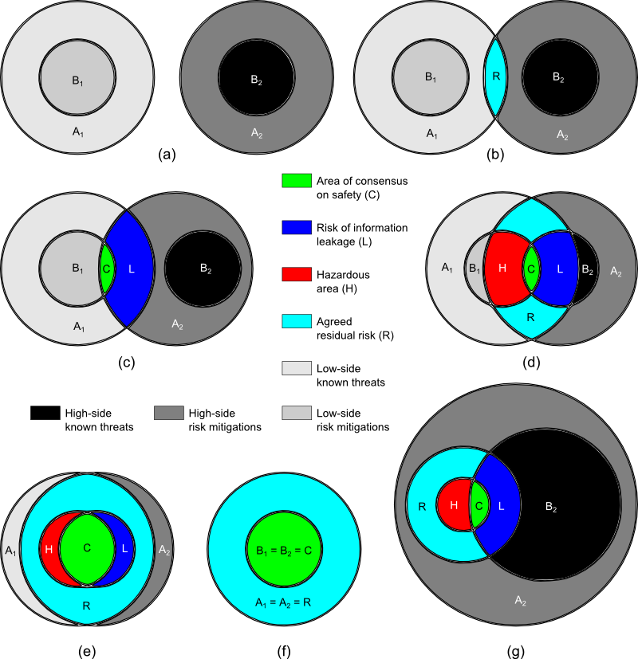

20th February 2015
An idea I've been playing around with for a while involves exhaustively cataloguing all of the allowable permutations of cross domain systems (CDS) in collateral, SCI, and international accreditations, as below:
In sub-figure (a), which represents a pure SCI-type international accreditation, Accreditor 1 has a completely independent idea of what threats exist (A1) and what risk mitigations are possible (B1); similarly, Accreditor 2 is cognisant of a different set of risks (A2) that would be desirable to mitigate, and a smaller set (B2) of risks that are, from Accreditor 2's perspective, possible to mitigate.
Sub-figure (b) represents public information.
Sub-figure (c) represents classified information with a risk of information leakage.
In sub-figure (d) there is not only a risk of information leakage but personal risk to Accreditor 2 as well.
Sub-figure (e) shows how the risk of classified information leakage and personal risk to one or more accreditors diminishes as the situation approaches a pure collateral configuration.
Sub-figure (f) is the degenerate configuration of a null cross domain system.
Sub-figure (g) shows a collateral (non-SCI-like) accreditation in which Accreditor 1 has a lower security clearance than Accreditor 2; in this example, Accreditor 2 knows everything Accreditor 1 knows, but Accreditor 1 does not know everything Accreditor 2 knows.
In some reachable cases, desirable information flows may be inhibited, or undesirable information flows may be forced. These represent information asymmetry in the accreditor-to-accreditor relationship and are logical consequences of the hierarchical security relationship. Can we find a way around it?
(Especially interesting are the red areas denoted "H" in parts (d), (e), and (g)—these represent risk mitigations that don't work; the high-side accreditor knows it, but can't tell the low-side accreditor because doing so would reveal the existence of a higher-classified threat.)
The goal of the Policy Interaction layer is to find and highlight the problematic configurations in order to...
7th February 2015
This is for Papa (1930–2015).
22nd January 2015
I've spent a few years caring deeply about the security testing of cross domain systems, a technology originally developed by the military and intelligence community, but with clear applications to other information-sharing problems like those faced by the health care industry.
Latest résumé is always here.
26th December 2014
New security contact information page here.
9th December 2014; updated 11th and 14th December 2014 and 14th February 2015
Optimal sequences for orders 1, 2, and 3 are easy to generate and not always unique; the optimal first order Banker's sequence, expressed in binary and starting from zero, is, of course, uniquely:
| Weight | Possible Bit Vectors | Graph1 | ||
|---|---|---|---|---|
| (0) | 0 |  | ||
| (1) | 1 |
1Example path shown in red; click graph to embiggen (SVG).
The optimal second order Banker's sequence is not unique; it can be either of:
| Weight | Possible Bit Vectors | Graph2 | |||
|---|---|---|---|---|---|
| (0) | 00 | 00 |  | ||
| (1) | 01 | 10 | |||
| (2) | 11 | 11 | |||
| (1) | 10 | 10 | |||
2Example path shown in red; click graph to embiggen (SVG).
A third order Banker's sequence admits even more solutions; here are some (but possibly not all) of them:
| Weight | Possible Bit Vectors | Graph3 | ||||||
|---|---|---|---|---|---|---|---|---|
| (0) | 000 | 000 | 000 | 000 | 000 |  | ||
| (1) | 001 | 100 | 010 | 001 | 100 | |||
| (2) | 011 | 110 | 011 | 101 | 101 | |||
| (1) | 010 | 010 | 001 | 100 | 001 | |||
| (2) | 110 | 011 | 101 | 110 | 011 | |||
| (1) | 100 | 001 | 100 | 010 | 010 | |||
| (2) | 101 | 101 | 110 | 011 | 110 | |||
| (3) | 111 | 111 | 111 | 111 | 111 | |||
3Example path shown in red; click graph to embiggen (SVG).
The fourth order Banker's sequence, surprisingly, is much trickier; this is the only known solution, so far, up to symmetry:4
 |
or, equivalently, |  |
4Example path shown in red; click graphs to embiggen (SVG snowflake or optimal network).
It is not known whether this solution is unique, or if any optimal solutions exist for orders > 4. Development is under way of a programme to search exhaustively for all solutions in any n.
11th November 2014
I have intermittent network connectivity. What I wish for sometimes is a virtual TCP/IP that would fool network applications into working well enough, without hanging, until real network service returned, at which point it would silently catch up. Web pages would not load, obviously, but I could enter new Google calendar events, send emails, and commit changes to GitHub without having to wait and remember to do it later. As it is, I write notes to myself. I think the network stack could do something similar.
Clearly, new apps can be written to have the same behaviour, but this would enable old apps, without rewriting, to have the new features.
22nd October 2014
Copies of my published papers are hosted on this web site (you can find links to them on my résumé) or on the respective copyright holders' site. Where no freely available version is available (maybe it's behind a paywall), email me and I'll send you a copy.
20th August 2014
Key fingerprint:
2C3B 11A1 CE7C 5B1F 87BC F5D0 299D 7116 EDC2 ABE5
9th June 2014
The two examples of syntax-highlighted code below were done using two
different methods for implementing the indentation seen: the first uses
repeated entities (as many as needed), and the second was done
with div blocks that implement hanging
indents of the whole s-expression block automatically (as well
as some special inline div
tags that don't automatically put a newline after).
23rd February 2014
See Humans TXT: We Are People, Not Machines for information.
1st Jan 2014
I've been experimenting with CSS for syntax highlighting.
TO DO:
The first code example uses lots of span but no special div tags:
The second example uses the auto-indent div
method. Note that no character entities are needed
in the source:
It's a little disappointing that closing parentheses cannot be put inside the div blocks if we want to stack all the parens at the end, but if stacking the closing parens is not desired, then putting the closing paren after the closing /div keeps the indentation levels of the closing parens where they ought to be (i.e., don't put closing parens inside the closing /div.)
The third example was auto-generated by a syntax-highlighting parser:
(Note that a tab is automatically inserted before in-line comments; I may have to fix that.)
This isn't a real blog; it's a place for me to experiment with techniques I might want to use somewhere else.
Email me here: joe AT call-with-current-continuation.com
Build 115
{kind=link}
{kind=link}
{kind=link}
{kind=link}
{kind=link}